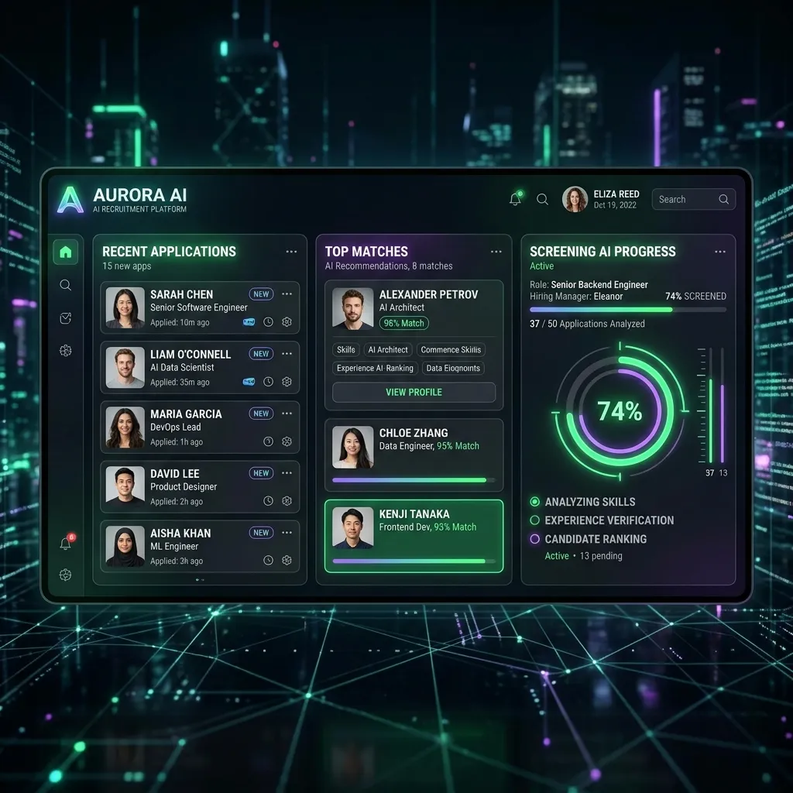
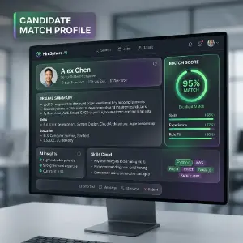
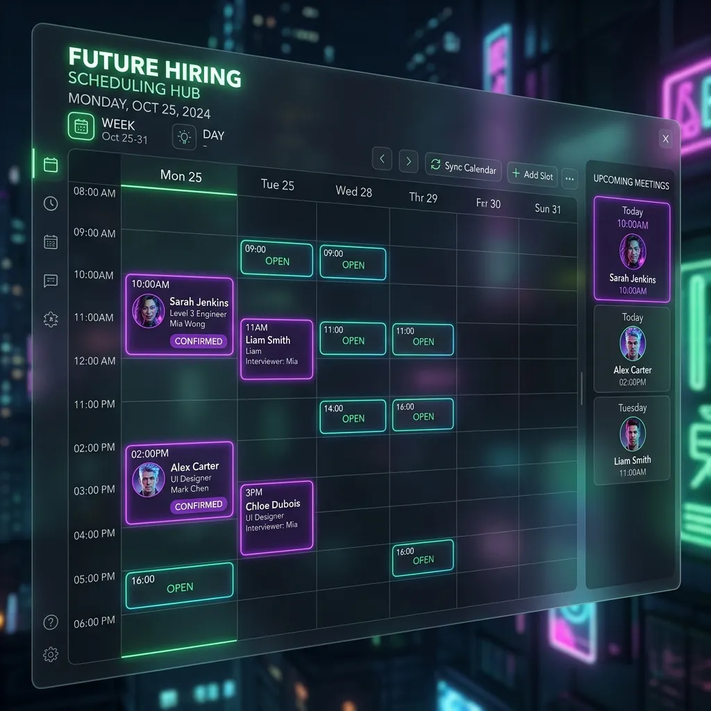
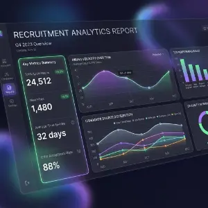

Recruitment Reimagined
BinaryAxon Recruitment (AXON RMS) is a comprehensive, AI-driven Applicant Tracking System designed to streamline and automate the full recruitment lifecycle — from posting job requisitions and sourcing candidates, through AI-powered resume parsing and ML-based job matching, to candidate selection and offer management.
Built for multi-tenant, multi-company organisations, AXON RMS consolidates every recruitment workflow into a single, role-driven platform accessible by administrators, recruiters, and hiring managers alike.
Intelligent by Design
AI-Powered Automation
Resume parsing, job matching, and candidate enrichment with zero manual effort.
Cloud-Native & Accessible
Manage recruitment from anywhere, on any device.
Role-Based Security
Fine-grained permissions for admins, recruiters, and hiring managers.
Data-Driven Insights
Real-time dashboards, reports, and analytics for smarter hiring.
All Modules at a Glance
15+ modules covering every aspect of the recruitment lifecycle — from sourcing to hiring.
Dashboard Overview
Real-time recruitment KPIs, candidate pipeline, and activity feed — tailored by role for admins and recruiters.
Recruiter Dashboard
- Real-time KPIs: Total Candidates, Active Jobs, Applications Today, Matched Candidates
- Candidate pipeline funnel by stage (Applied → Screened → Interview → Selected)
- Recent activity feed: new applications, parsed resumes, enrichment updates
- Quick-access tiles: New Candidate, New Job, Smart Search
Admin Dashboard
- Candidate counts by status across all companies and departments
- User type analytics: active recruiters, hiring managers, admins
- Job requisition status summary: Open, On Hold, Closed, Filled
- Recent system activity log (resume uploads, AI parsing events, match queue status)

Candidate Management
The core applicant repository — end-to-end profiles with AI-assisted parsing to auto-populate fields from resumes.
Candidate Profile
- 15+ data sections: personal, contact, CNIC/ID, DOB, marital status, nationality
- Professional summary & career objective
- Current/expected salary, notice period, availability
- Profile photo upload
Work Experience
- Multiple experience entries with company, designation, dates, description
- Current employment flag with "To Present" handling
- Industry & functional area classification
- Auto-populated from AI resume parsing
Education
- Degree, institution, year, grade/GPA, major
- Linked to master data (configurable lookups)
- Auto-populated from AI resume parsing
Skills & Languages
- Skills from managed taxonomy with proficiency levels
- AI auto-extraction from resume text
- Language proficiencies with spoken/written/reading levels
Resume Upload & Storage
- Upload PDF / Word resumes per candidate
- Extracted text stored for search and AI processing
- Multiple resume versions with active version flag
- Trigger AI parsing on upload to auto-fill profile
Candidate Listing & Filters
- Grid view with pagination, sorting, quick actions
- Filter by skill, experience, education, status, career level
- Export to Excel/CSV
- Bulk actions: assign to job, update status, delete

Job Postings & Requisitions
Full lifecycle management of open positions — from requisition creation through active posting, pipeline management, and closure.
Title, department, location, vacancies, experience, education, salary range, status tracking
Publish with open/close dates, assign recruiter, link to client/company, custom candidate forms
Configurable stages: Applied → Shortlisted → Phone Screen → Interview → Technical Test → Offer → Selected


Applications Tracking
Every candidate-to-job linkage tracked with source, pipeline stage, and historical status changes with recruiter remarks.
Link existing candidate to open job, record source (LinkedIn, Indeed, Manual, Referral), set initial stage
View all applications per job, update status with remarks, audit trail of all transitions
Active / On Hold / Rejected / Withdrawn / Offered / Joined — with bulk status updates
Candidate Selection
Structured workflows for shortlisting, evaluating, and finalising candidates — with multi-stage selection, interview scheduling, and offer tracking.
Shortlisting
- Review applications & move to Shortlisted
- Side-by-side candidate comparison
- Batch shortlisting with bulk actions
- Automated email notifications
Interview Management
- Schedule with date, time, interviewer, location/link
- Multi-round tracking (HR Screen, Technical, Final)
- Feedback capture with rating & recommendation
- Interview history per candidate per job
Offer Management
- Generate offer: salary, joining date, designation
- Approval workflow with configurable approvers
- Status: Pending, Accepted, Declined, Negotiating
- Link to onboarding / HRMS handoff

AI Resume Parsing
Multi-model pipeline that automatically extracts structured information from uploaded resumes — PDF, Word, and scanned documents via OCR.
PDF (PdfPig), Word (Syncfusion DocIO), scanned docs via Tesseract OCR v5.2.0
LLM prompt-engineered to extract name, contact, experience, education, skills, languages, salary
Local LLM for offline / privacy-sensitive deployments — Llama, Mistral, etc.
Parsed data fills candidate fields with recruiter review step, confidence indicators, and audit log


AI Job-Candidate Matching
Microsoft ML.NET model scores candidate suitability against open requisitions — processed asynchronously via a background worker.
New/updated candidates enqueued, processed async with throttling and retry
Features: skill overlap, experience match, education alignment, career level, location → score 0–100
Ranked candidates per job, filter by threshold, one-click apply from recommendation list
Candidate Enrichment Apollo.io
Automatically supplement candidate profiles with verified professional data — employment history, seniority, company details, and contact information.
Apollo People Search
- Search by name, email, or LinkedIn URL
- Verified: employer, title, location, seniority
- Company data: industry, size, website
- Contact: verified email & phone
Enrichment Background Worker
- Automatic trigger for new candidates
- Async processing via background worker
- Rate-limit aware (Apollo API quotas)
- Enrichment log for audit
Profile Merge
- Enriched data merged into existing profile
- Conflict detection (non-empty fields not overwritten)
- Recruiter review step for conflicting data
- Source tagged on each field for traceability

Profile Sync Chrome Extension
Manifest v3 extension that captures candidate profiles directly from LinkedIn, Indeed, and GitHub — and syncs them instantly into AXON RMS.
Auto-detects profile pages, extracts name, headline, location, experience, education, skills — one-click sync
Captures CV/resume pages — work history, education, skills, contact details
Captures developer profile: name, bio, location, repositories, skills — ideal for technical roles
Injects session credentials, enables authenticated API calls, supports multiple environments


Smart Search
Advanced candidate discovery combining full-text search, structured attribute filtering, and AI match scoring.
Lucene.Net powered — names, resume text, skills, job titles, companies, Boolean operators
Skill, experience, education, career level, location, functional area, salary range, availability
Paginated cards, sort by relevance/experience/name, shortlist directly, export to Excel, save queries
Setup — Master Data Hub
Foundational reference data that drives dropdowns, filters, and matching across the system.
Multi-tenant profiles, legal/contact/billing details
Department, designation, functional area, career level
Managed taxonomy, proficiency levels, language master
Degree types, institutions, subjects/majors
Country, province/state, city master lists
Custom forms per job posting, undertaking templates
Security & Access Control
Fine-grained control over who can see or perform actions on each area of the application.
Local auth + Google/Facebook OAuth, active/inactive status, password reset, account lock
Super Admin, Recruiter, Hiring Manager, Viewer — bundle permissions, company-scoped
Page-level: Read, Write, Edit, Delete, Approve — per module and sub-module
Token expiry, login history, last-access tracking, trigger-based error logging


Billing & Invoicing
Manage invoicing for recruitment services rendered to clients — invoice generation, line-item detail, and payment tracking.
Create invoices linked to client and engagement, auto-generated numbers, line-item detail, status tracking (Draft/Sent/Paid/Overdue)
Summary by client/period/status, revenue by recruiter, outstanding aging, export to PDF
Reports & Analytics
Pre-built operational and analytical reports covering the full recruitment pipeline, candidate metrics, job performance, and AI activity.
Candidate Reports
- Candidate Register
- By Source / By Status
- Skill Coverage Report
Job & Requisition Reports
- Open Requisitions
- Time-to-Fill
- Requisition Status Summary
- Recruiter Performance
AI & Matching Reports
- Match Score Distribution
- AI Parsing Activity Log
- Enrichment Coverage
- ML Model Accuracy
Dashboard Analytics
- Candidate counts by status
- Monthly application volume
- Hired vs. Rejected ratio
- User activity report

Settings & Configuration
System-level and application-level configuration that governs AXON RMS behaviour, integrations, notifications, and menu structure.
Currency, date format, pagination, AI service keys (Gemini/Ollama), Apollo API, resume storage
SMTP config, template management, per-event toggles, BCC/CC routing
Dynamic menu builder, show/hide modules per role, ordering and grouping
Log4Net integration, error log viewer, matching queue monitor, AI parsing error log

See AXON RMS in Action
Book a live demo and discover how AI-driven recruitment can streamline your hiring process.